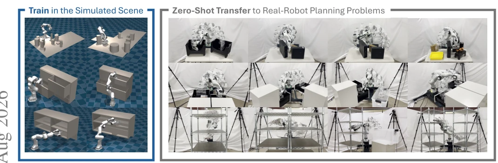
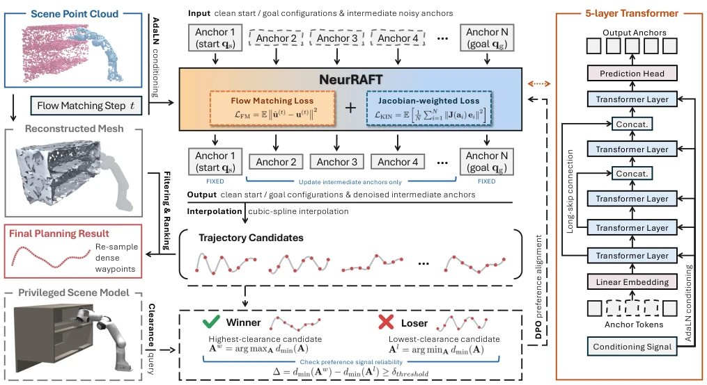
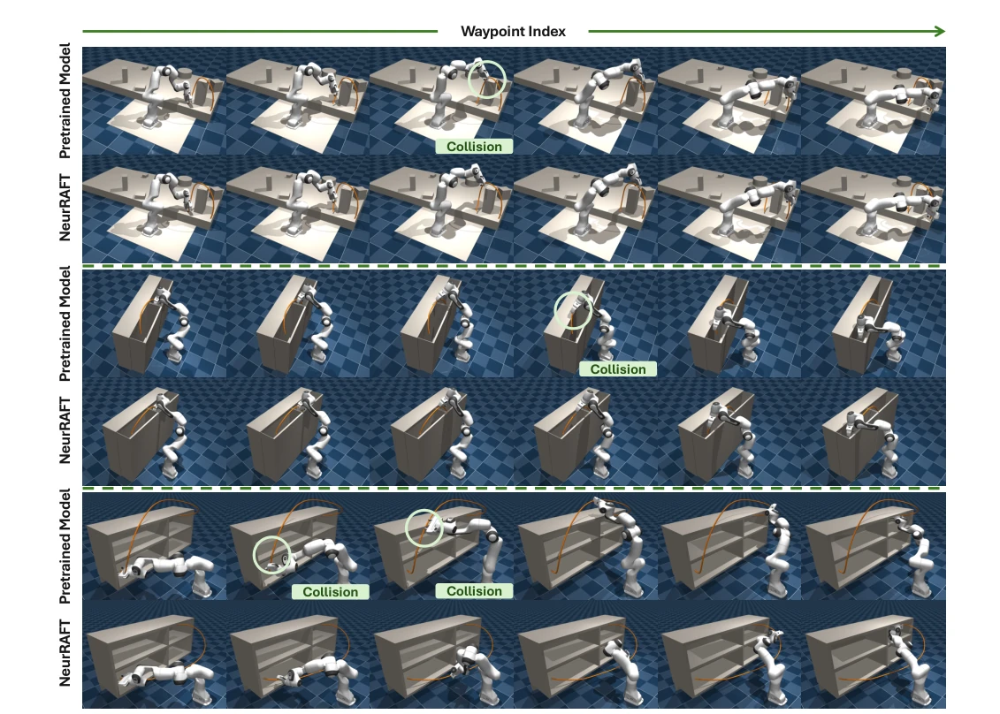
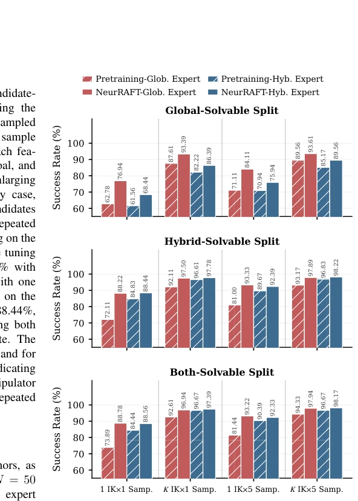
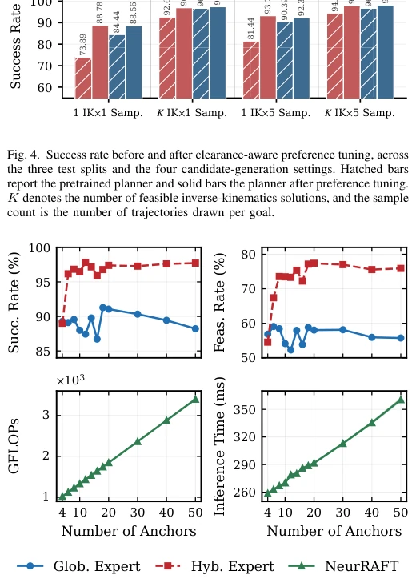
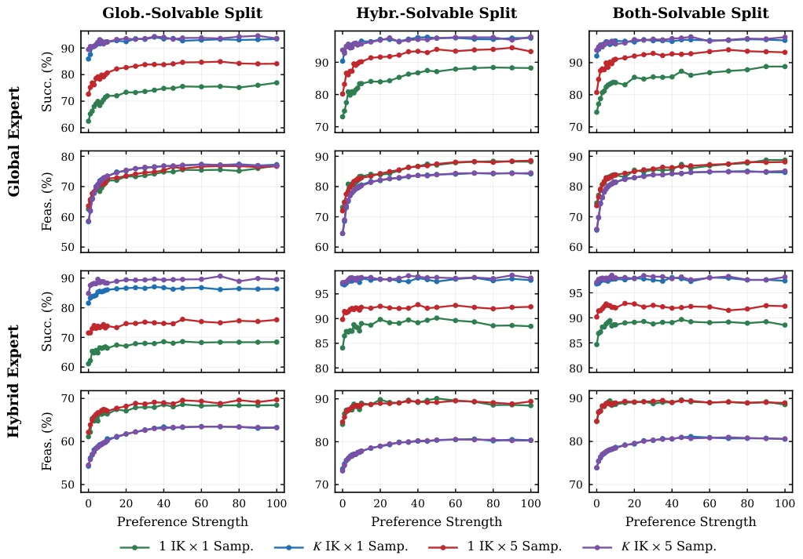

This NeurRAFT paper serves as a strong shot of adrenaline for generative motion planning. The authors did not follow the usual path of stacking dense waypoints, but instead implemented an anchor-level Flow Matching, requiring only two steps for inference, equipped with cubic-spline interpolation, saving computation while ensuring smoothness. The most striking aspect is using DPO for clearance-aware tuning, modifying the distribution directly without extra inference correction. However, the preference alignment step still relies on privileged geometric information in the simulator to calculate clearance, although not dependent during inference, does this count as an "open-book exam"? Additionally, real-world zero-shot transfer is indeed appealing, but is the step of Mesh reconstruction filtering candidate trajectories stable under real noisy depth maps? Overall, the scores on SOTA are impressive, but the claim of "no privileged information" is discounted during the training phase, representing a paradigm of "cheating during training, invisible during inference".
Traditional planners (e.g., PRM [4], RRT [5], CHOMP [8]) rely on explicit geometric models, which are difficult and slow to reconstruct from raw sensors. Neural planners (e.g., MPNet [12], MπNets [1]) are end-to-end, but suffer from multi-step rollout error accumulation and lack multi-modal modeling. Generative methods (Diffusion [14], [15]) can model multi-modality but are slow in inference. Existing methods use only positive samples during training, unable to distinguish "collision" from "safe", leading to residual collisions during testing. NeurRAFT aims to solve the problems of trajectory representation redundancy (dense waypoints) and insufficient training signals (lack of negative sample supervision), improving safety and efficiency through compact anchor representation and preference alignment.

Fig. 1. We present NeurRAFT, a generative motion planner trained entirely in simulation that transfers zero-shot to a physical Franka manipulator. Left: training on the MπNets benchmark [1], covering tabletop, cubby, and dresser scenes. Right: the same model plans directly from depth observations in real- world settings with physical obstacles unseen during training. Each panel overlays the executed trajectory as a sequence of robot configurations.
The overall process is divided into training and inference. Training includes pre-training and preference alignment. Inference includes anchor generation, interpolation, and filtering. 1. **Anchor-Level Flow Matching**: Trajectories are not represented as H dense waypoints, but as N anchors (N<<H). Flow Matching learns the velocity field from noise to anchor, requiring only 2-step Euler integration for inference. Boundary anchors are fixed as start/goal. 2. **Jacobian-Weighted Loss**: Traditional loss is uniformly weighted in joint space, NeurRAFT uses Jacobian weighting, penalizing joint errors that have a large impact on end-effector displacement, better aligning with task space requirements. 3. **Clearance-Aware Preference Tuning**: Utilize the pre-trained model to sample and generate trajectories, calculate signed obstacle clearance using privileged geometric information. Construct preference pairs (winner/loser), optimize the policy using DPO [20], shifting probability mass towards high clearance trajectories. This process is completed offline, adding no inference overhead. 4. **Inference**: Generate multiple anchor sequences -> Cubic Spline interpolation -> Collision filtering based on point cloud reconstructed Mesh -> Select shortest path or minimum penetration depth.

Fig. 2. Overview of NeurRAFT. Given a scene point cloud and clean start/goal configurations, NeurRAFT generates a compact set of trajectory anchors via flow matching, with the intermediate anchors progressively denoised while the boundary configurations remain fixed. A cubic spline then interpolates the anchors to recover smooth trajectory candidates, which are filtered and ranked against a mesh reconstructed from the observed point cloud, and the selected candidate is resampled into dense waypoints as final planning solution. During preference alignment (dashed process), the trajectories are evaluated using a privileged scene model to obtain signed obstacle clearance, and preference pairs are constructed to fine-tune NeurRAFT toward higher-clearance trajectories. This privileged informati
On the MπNets [1] benchmark, containing tabletop, cubby, dresser scenes. Comparing Classical (CHOMP [8], STORM [33]) and Neural (MπNets [1], EDMP [16], Cascaded Diffusion [18]). The metric is Success Rate. NeurRAFT surpasses SOTA on splits such as Global-Solvable, e.g., reaching 93.61% on Global-Solvable under Global Expert training. Ablation shows anchor count N=8 has the best cost-performance ratio, preference tuning significantly improves success rate. Real Franka robot arm zero-shot transfer experiments verify sim-to-real capability, effective under noisy depth maps.

Fig. 3. Qualitative comparison of trajectories generated by the pretrained and preference-aligned models on three representative planning cases. The orange curves denote the TCP trajectories. Across all three cases, preference alignment shifts the trajectory distribution toward higher-clearance solutions, leading the final planner to generate safer trajectories with larger obstacle clearance without any post-hoc trajectory refinement.

Fig. 4. Success rate before and after clearance-aware preference tuning, across the three test splits and the four candidate-generation settings. Hatched bars report the pretrained planner and solid bars the planner after preference tuning. K denotes the number of feasible inverse-kinematics solutions, and the sample count is the number of trajectories drawn per goal.

Fig. 5. Effect of the number of anchors on planning quality and inference cost. The top row reports success rate and feasibility rate for models trained on the Global and Hybrid demonstrations, each evaluated on its matching test split. The bottom row reports the computational cost per query, which depends only on the architecture and is therefore shared by both expert settings.
其他图片Other Figures

Fig. 6. Success rate and feasibility rate as a function of the preference strength β. The top two rows report models trained on the Global expert dataset and the bottom two rows models trained on the Hybrid expert dataset, each evaluated on the three test splits of the benchmark. Every panel shows the four candidate-generation settings, with K denoting feasible IK solutions and the sample count denoting trajectories per goal configuration.